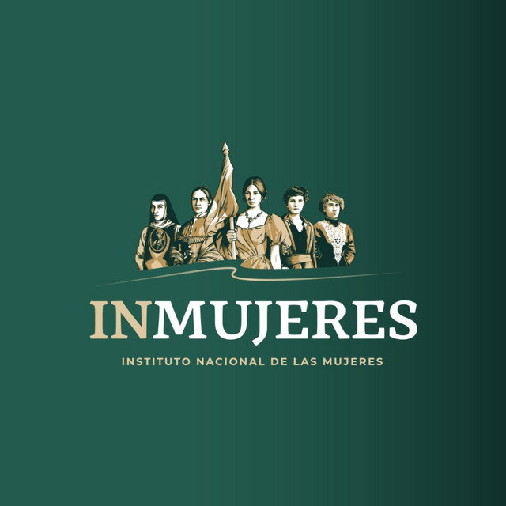

Nuevas luchas por la igualdad (1970-2000)
Durante los años setenta el movimiento feminista amplió sus demandas hacia los derechos reproductivos, la igualdad jurídica y la participación política. En 1974 se reformó el artículo 4° constitucional para establecer que hombres y mujeres son iguales ante la ley.
En las décadas siguientes se fortalecieron las organizaciones feministas, surgieron instituciones dedicadas a la protección y promoción de los derechos de las mujeres, y se impulsaron acciones contra la violencia de género. También se lograron avances en la representación política femenina mediante cuotas de género en las candidaturas.
